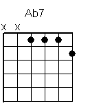
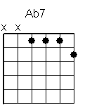
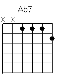

 


| Fm6 | C | |
| Some | people like to watch TV, while | others prefer dancing |
| D7 | G7 | |
| There’s | only one thing in this world that | titillates my fancy |
| Fm6 | C | |
| Don't | care too much for politics, or | who sleeps in whose bed now |
| D7 | G | |
| I'd | like to hear all your ideas a | bout the books you've read now |
|
| Fm6 | C | |
| Some | people like to play a sport, and | tackle one another |
| D7 | G7 | |
| my favou | rite scrum's around conundrums, yes, | that's my goal with others |
| Fm6 | C | |
| Don't | care too much 'bout what we drink or | how you cook your mushrooms |
| D7 | G7 | |
| I'd | rather soak up what you think, and | move on with discussions |
| C | C#dim | Dm7 | Fm6 | |
| I like to | talk | . That’s as it | ought to | be... |
| F | F#dim | C/G | C+/G# |
| Words; I like | words; | equable, sensible, | not always practical |
| C6/A | C7/Bb |
| Characteristically | matter-of-factical |
| F | F#dim | C/G | C+/G# |
| Words; I like | words, | terribly lyrical, | sometimes satirical |
| C6/A | C7/Bb |
| Lewd and illogical; | it’s pathological |
| Dm7 | Dm7/G |
| That is why I | say |
| Fm6 | C | |
| Some | people like to play guitar, quite | honestly I do too |
| D7 | G7 | |
| my favou | rite strum is playing dumb, I | know that might confuse you |
| Fm6 | C | |
| It's | just one way to get my head a | round the way they're thinking |
| D7 | F/G | |
| And | make some sense of how I see their | neurones linking |
